|
Fishing
Fishing is a quick way of getting food to heal yourself. There are various sorts of fishing spots in the game. You will need to buy the correct fishing equipment to match the fishing spot. Fishing equipment can be bought from fishing shops.
Typically a fishing spot will have a left click option and a right click option. These options are net, bait, harpoon, lure and cage.
Click on the correct option and if you have the correct equipment you will attempt to catch a fish. |
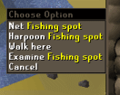 |
You can find below the guides to each of the different types of fishing you can do in Runescape. A similar table to the one below can be opened in the game by clicking the fishing skill icon in the stats menu.
|
Fish |
Level |
Fish |
Level |
Shrimp
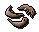 |
Level 1
Type: Net Fishing |
Sardine
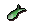 |
Level 5
Type: Sea bait fishing |
Karambwanji
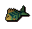 |
Level 5
Type: Net Fishing
Members only |
Herring
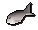 |
Level 10
Type: Sea bait fishing |
Anchovies
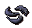 |
Level 15
Type: Net Fishing |
Mackerel
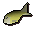 |
Level 16
Type: Big net fishing
Members only |
Trout
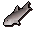 |
Level 20
Type: Fly Fishing |
Cod
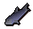 |
Level 23
Type: Big net fishing
Members only |
Pike
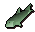 |
Level 25
Type: River bait fishing |
Slimey Eel
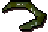 |
Level 28
Type: River bait fishing
Members only |
Salmon
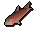 |
Level 30
Type: Fly Fishing |
Tuna
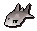 |
Level 35
Type: Harpoon fishing |
Lobster
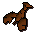 |
Level 40
Type: Lobster fishing |
Bass
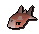 |
Level 46
Type: Big net fishing
Members only |
Swordfish
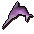 |
Level 50
Type: Harpoon fishing |
Karambwan
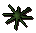 |
Level 65
Type: Karambwan Vessel Fishing
Members only |
Shark
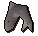 |
Level 76
Type: Harpoon fishing
Members only |
Sea Turtle
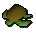 |
Level 79
Type: Trawler Mini Game
Members only |
Manta Ray
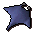 |
Level 81
Type: Trawler Mini Game
Members only |
|
|
Types of Fishing
Net Fishing
Location: Found in many sea fishing locations
Required items: Net
|
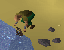 |
Sea bait fishing
Location: Found in many sea fishing locations
Required items: Fishing rod, Fishing bait
|
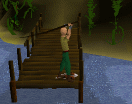 |
Fly Fishing
Location: Found in many river fishing locations
Required items: Fly Fishing rod, Feathers
(You will use up 1 feather every time you catch a fish)
|
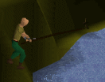 |
River bait fishing
Location: Found in many river fishing locations
Required items: Fishing rod, Fishing bait
(You will use up 1 bait every time you catch a fish) |
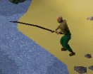 |
Harpoon fishing
Location: Found in Karamja and in many sea fishing locations on the members servers.
Required items: Harpoon
|
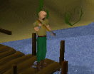 |
Lobster fishing
Location: Found in Karamja and in many sea fishing locations on the members servers.
Required items: Lobster pot
|
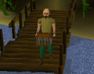 |
Big net fishing - (Members only)
Location: Found at Catherby and the fishing guild.
Required items:Big net
When using a big net to fish you may catch things other than fish including seaweed (used in crafting), leather boots, leather gloves and caskets (see below).
|
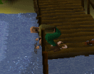 |
Shark fishing - (Members only)
Location: Found at Catherby and the fishing guild.
Required items: Harpoon
|
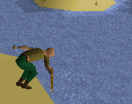 |
Karambwan Vessel Fishing - (Members only)
Location: South of Brimhaven
Required items: Karamabwan Vessel,
Raw Karambwanji
|
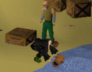 |
Fishing Guild
When you have reached a fishing level of 68 or higher you will be able to enter the Fishing Guild, located to the north of Ardougne.
Inside you will find a number of different fishing spots, along with a number of ranges and a bank.
Caskets
Players using a big net to fish, will occasionally find a casket. These are rare items that usually contain a nice surpise for the lucky fisherman who finds one.
To open a casket and see what is inside, simply click on it in your inventory. Caskets can contain many different items including money, gems, runecrafting talismans or even rare items like half keys! |